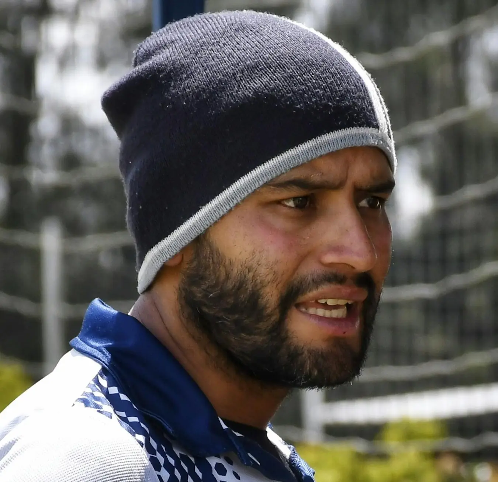
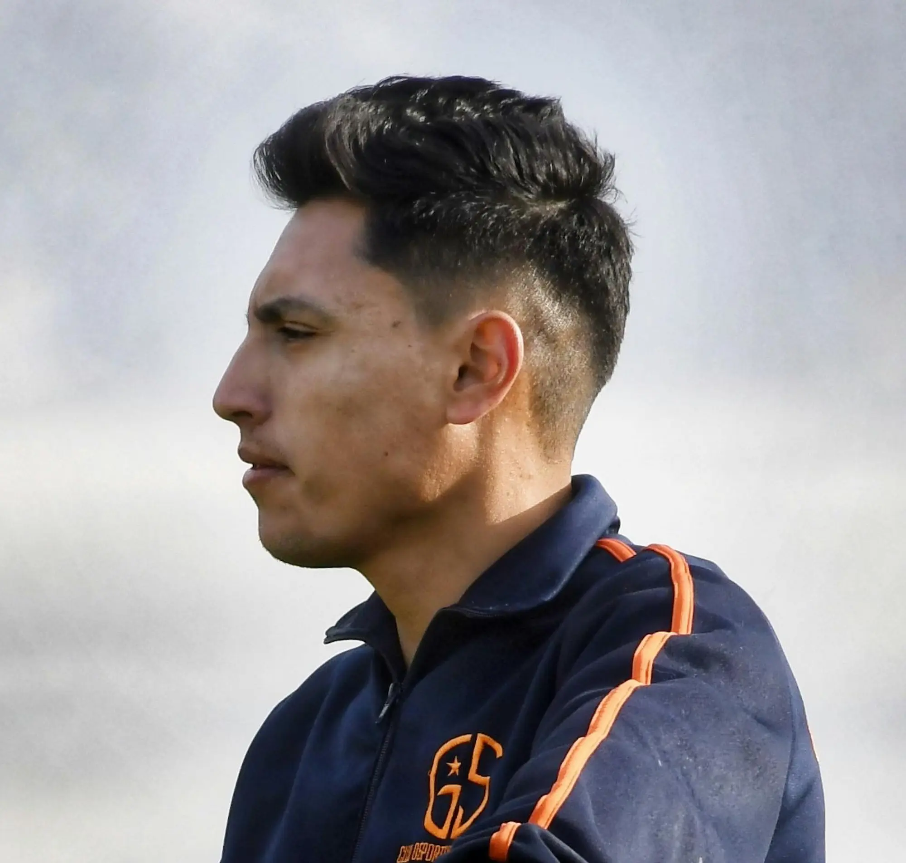
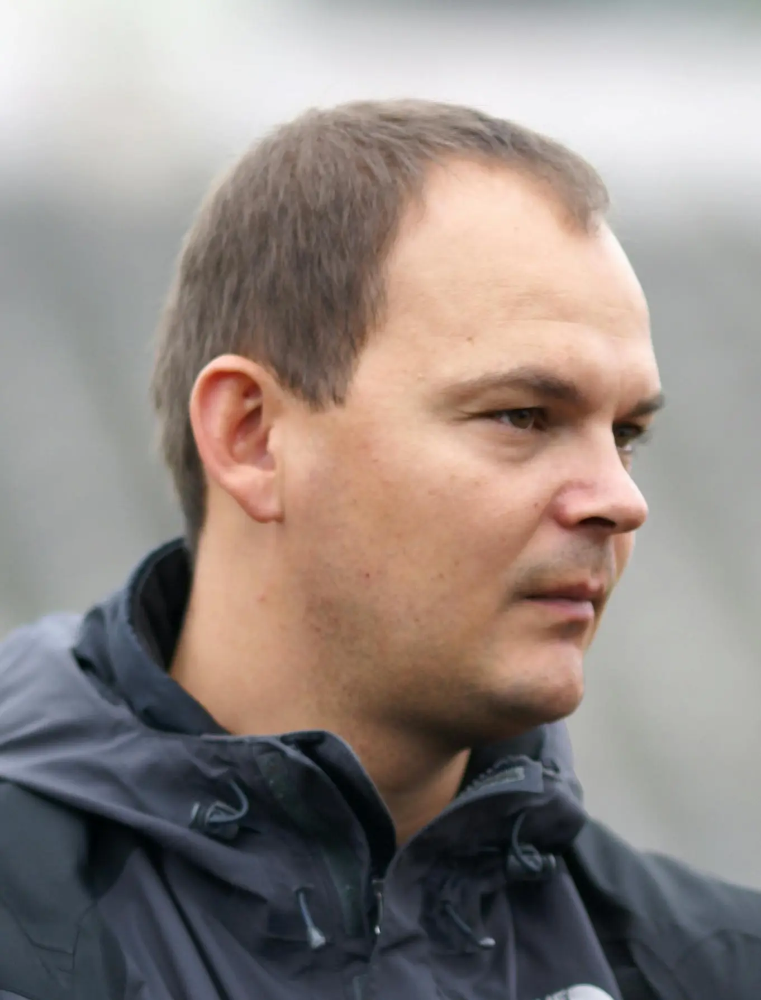
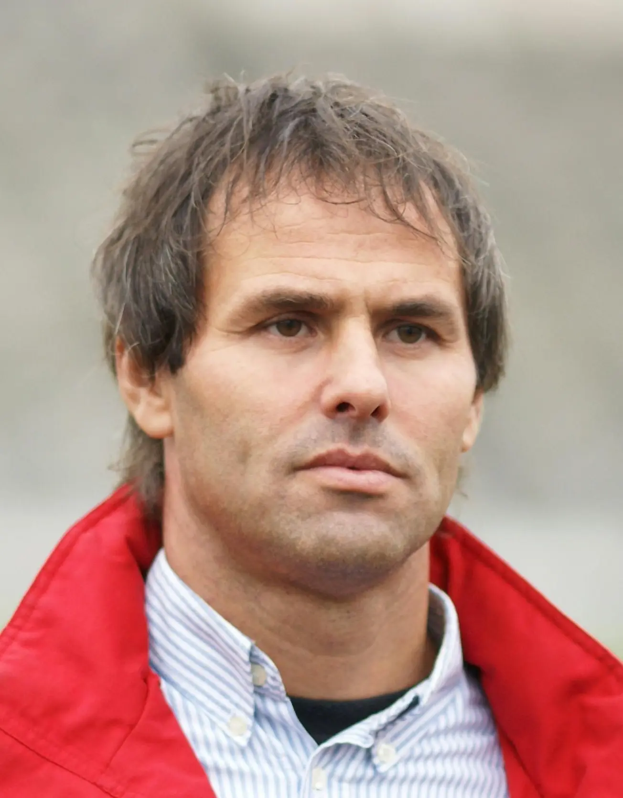
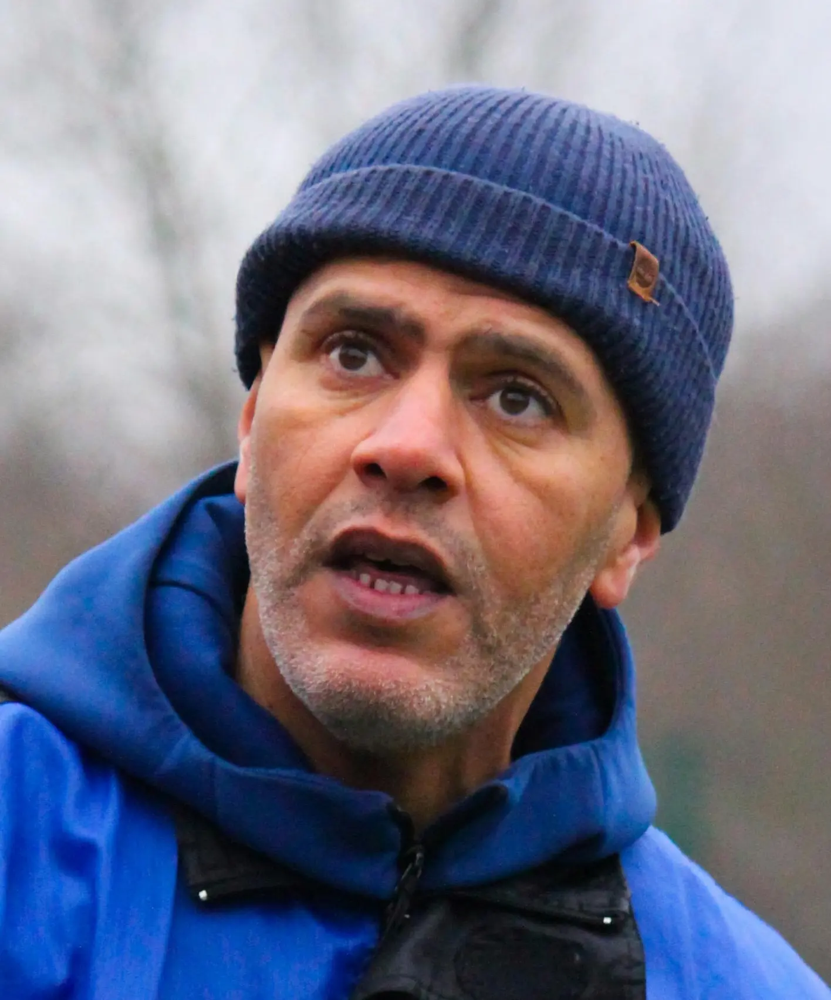
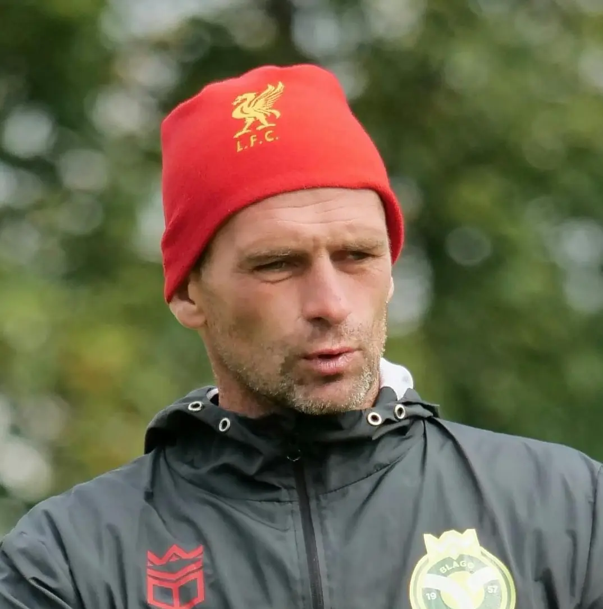
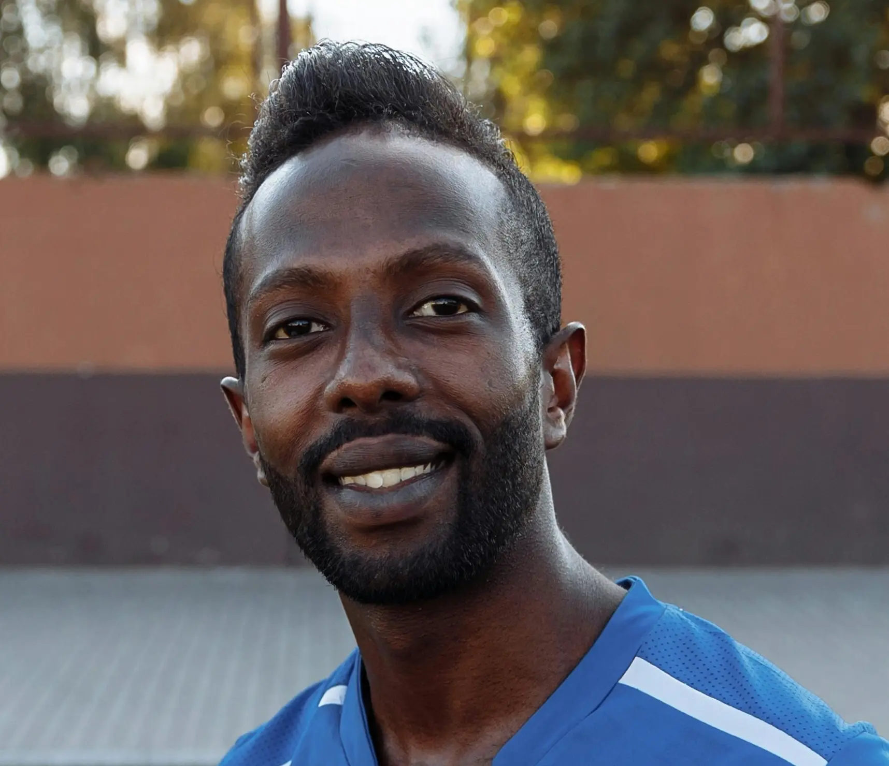

Coach John Bliss
USSF A-License | Former MLS Player | 10+ years of elite youth development experience.

Coach Jens Smith
UEFA B-License | NCAA D1 Alumni | Passionate about technical player growth.
Coach Marco Alvarez
Former Pro in La Liga | Spanish Youth Academy Trainer | Tactical specialist.

Coach Mio Chen
USSF B-License | Sports Psychology M.A. | Known for building confident leaders.

Coach Alex Rivera
National Youth Coaching Certified | Focus on agility, speed, and first touch.

Coach Emi Foster
Collegiate All-American | Devoted to empowering girls in soccer at all levels.

Coach Samir Patel
15+ years coaching competitive club teams | Emphasizes discipline and game IQ.

Coach Brock Wilson
Certified Youth Sports Trainer | Strong background in injury prevention and conditioning.